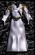

| Original Name | Nom Français |
| Robe of the Purified Souls | Robe des Ames Purifiées |
|
 |
|
| Lieu |
| Stoneheim Purificateur |
| Bonus |
| +10 Sag, +25 Résistance Nécro |
| Commentaires |
| 3 Commentaires |
|
Lord Druideos
Messages: 8 |
- elle équivault a la robe droppé par le golem de chair sauf un peu meilleur
Posté le : 08-02-2004 06:04:52 |
|
Wisdom / LLV
roturier 4ever
 Messages: 485 |
- elle est tres bien cette robe contre les pauvres necro qui voit que la vie de leur adversaire ne baisse pas 
Posté le : 14-03-2004 03:11:32 |
|
Sir Robin
Prince des Rêves
 Messages: 186 |
- C'est sur c'est super pratique, surtou quand on a d'autre boost pour les Necro -  vive les pretrooo !!! vive les pretrooo !!!
Posté le : 21-04-2004 16:14:09 |